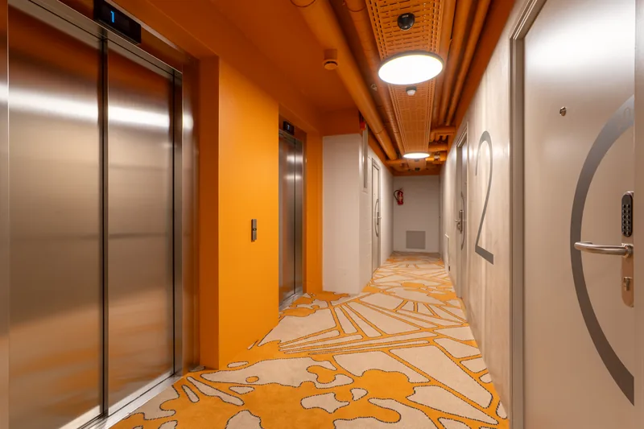
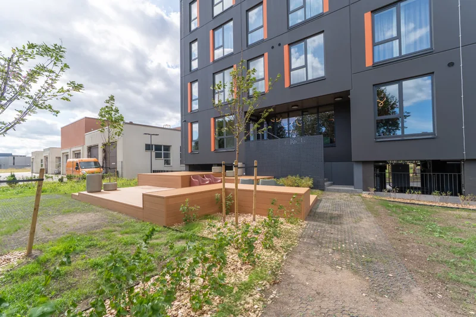

Lühivastus
Uusarenduses ei müü üksik korter, vaid terve maja. Pildista üks või kaks näidiskorterit korraliku komplektina, seejärel kõik üldalad – trepikoda, fuajee, parkla, hoov, panipaigad. Neid fotosid saab kasutada iga korteri kuulutuses, nii et üks pildistamine katab kogu projekti.
Uusarendus on kinnisvarafotograafias eriline juhtum. Objekte on kümneid, aga nad on üksteisega peaaegu identsed. Enamik korteritest on tühjad. Ja ostja otsus ei sõltu ühestki üksikust korterist – ta sõltub majast, hoovist ja sellest, milline on sinna sisenemine.
Kõiki kortereid ei ole mõtet pildistada. Üks või kaks tüüpplaani, korralikult tehtud, katavad enamiku vajadusest. Valikul tasub arvestada kolme asja:
Tühjade korterite puhul on virtuaalne staging uusarenduses peaaegu standard: sama tühi ruum saab mitu erinevat sisustuslahendust ja neid saab kasutada eri sihtrühmadele.
Siin jäävad arendajate kuulutused kõige sagedamini vajaka. Korterifotod on olemas, aga majast endast ei ole ühtegi pilti – ja just maja on see, mis eristab uut arendust vanast korterist samas hinnaklassis.
Mida pildistada:


Uusarenduses on rida detaile, mis müüvad hästi, aga jäävad kuulutustest tavaliselt välja:
Uusarenduse pildistamise majanduslik loogika erineb üksikobjektist. Sa ei osta fotosid ühe kuulutuse jaoks – sa ostad varamu, mida kasutad:
Seepärast tasub uusarenduses küsida fotograafilt kasutusõiguse kohta juba kokkuleppel – mitte siis, kui reklaamikampaania on juba tegemisel.
Ajastus. Kõige sagedasem viga on pildistada liiga vara – kui hoov on veel ehitusplats ja haljastus tegemata. Üldalade fotod tasub teha siis, kui ümbrus on valmis, isegi kui korterifotod tehti varem. Ehitusjärgus hoov fotol maksab rohkem, kui ta säästab.
Arendajale. Suuremad projektid hinnastame eraldi – kirjuta objekti maht ja ajakava, teeme pakkumise. Vaata ka tehtud töid.
Küsi pakkumine